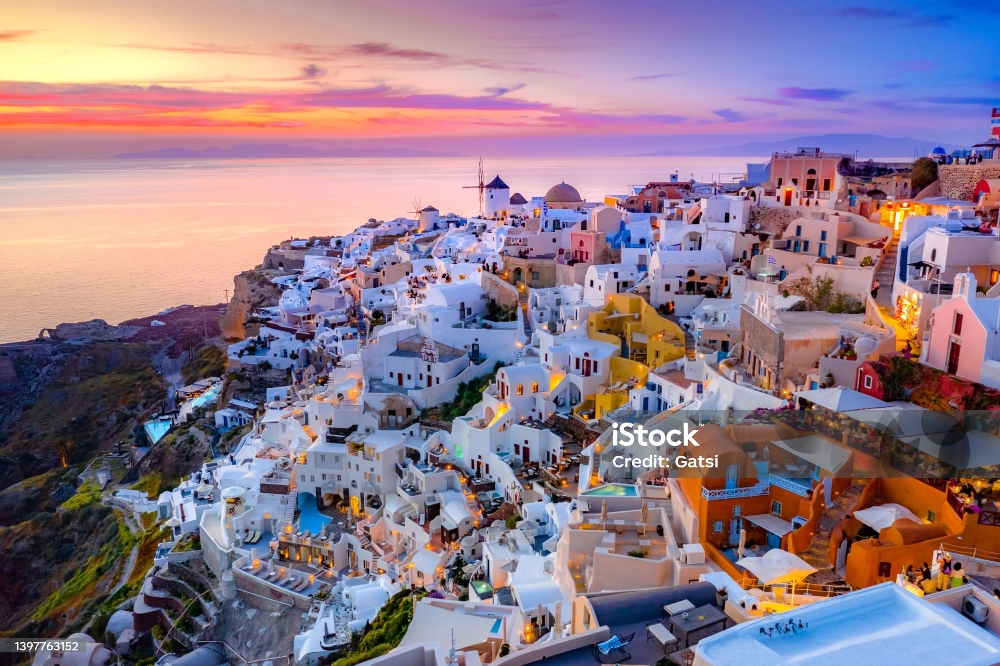

My dream vacation
wikipedia

There are so many fascinating destination around the world, but this particular location stand out for me. In this blog post, you are about to uncover 10 interesting facts about Santorini that will ignite your curiosity and deepen your appreciation for this remarkable island.
Renowned for its stunning landscapes, mesmerizing sunsets, and vibrant culture, it is a destination that never fails to enchant visitors. From its rich history and geological wonders to its delectable cuisine and beautiful attractions, Santorini offers a plethora of fascinating insights.
10 interesting facts about Santorini
- Ancient civilization: Santorini was once home to a thriving Minoan civilization, which flourished around 3,500 years ago. The archaeological site of Akrotiri showcases remarkably preserved ruins, offering a glimpse into the resident’s advanced way of life.
- Volcanic eruptions: Santorini’s breathtaking landscape is a result of volcanic activity. The island was formed by a volcanic eruption that occurred around 3,600 years ago. This catastrophic event is one of the largest volcanic eruptions in recorded history.
- Wine production: Despite its arid climate and volcanic soil, Santorini is well-known for its exceptional wine production. The island’s unique vine-growing technique, known as “kouloura,” involves training vines into low circular shapes to protect them from strong winds. Indulge in a Santorini Wine Tasting tour to learn all about wine production.
- Caldera formation: The caldera of Santorini is a breathtaking natural wonder that was created by the previously mentioned massive volcanic eruption. The explosion resulted in the collapse of the central part of the island and the formation of a large, crescent-shaped basin.
- Multicolored beaches: Santorini boasts a range of unique beaches due to its volcanic origin. The Red Beach, known for its striking red cliffs and pebbles, and the Black Beach, characterized by its dark volcanic sand, are among the most famous.
- Santorini villages: Perched on the caldera cliffs, the picturesque villages of Fira, Oia, and Imerovigli offer breathtaking panoramic views of the caldera and the Aegean Sea. Book a Santory Day Tour to unearth the charm of the whitewashed houses, blue-domed churches, and narrow winding streets that create a postcard-perfect setting.
- Unique grape varieties: Santorini is home to indigenous grape varieties such as Assyrtiko, Athiri, and Aidani. These varieties have adapted to the island’s volcanic soil and produce wines with distinct mineral and citrus notes.
- “Ifaisteia” bonfires: On the eve of Greek Orthodox Easter, Santorini comes alive with bonfires known as “Ifaisteia.” These bonfires symbolize the triumph of light over darkness and create a magical atmosphere across the island.
- Traditional dishes: Santorini’s cuisine is renowned for its traditional dishes. One must-try delicacy is “Santorinian Fava,” a creamy yellow split pea puree. Another specialty is “Tomatokeftedes,” fried tomato balls seasoned with local herbs and spices.
- Cultural events: Santorini hosts various cultural events and festivals. The International Music Festival showcases renowned musicians, offering a diverse classical, jazz, and Greek music program. The Santorini Arts Factory hosts exhibitions, concerts, and theatrical performances, adding creativity to the island’s cultural scene.